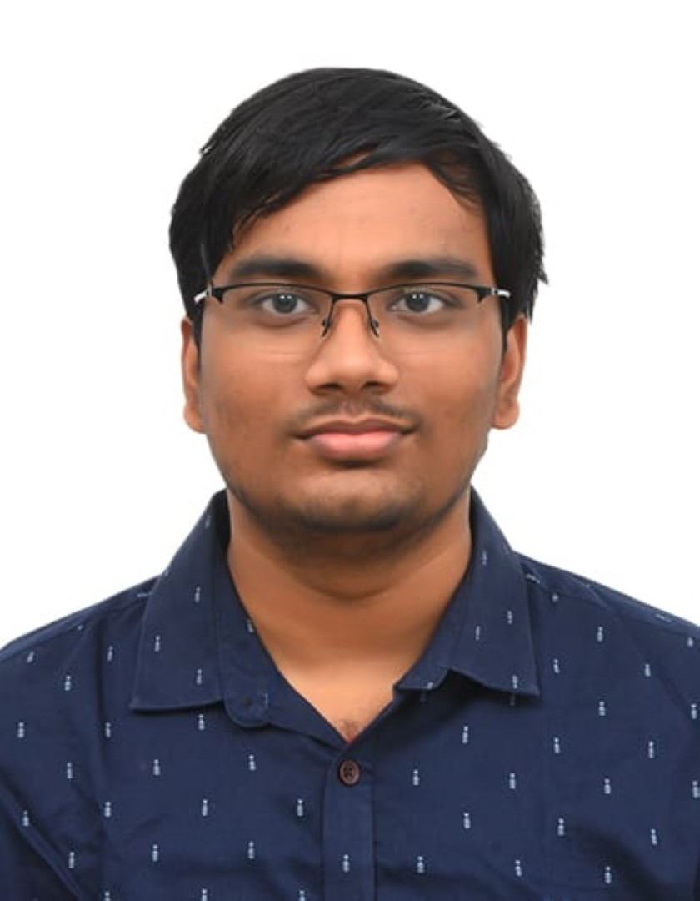

Resume
Details:

Name: Sravan Kowsik G
Current university: Vellore Institute of Technology, Chennai
Degree: Computer Science Engineering with Specialisation in Artificial Intelligence and Robotics
Year of completion: 2027
Summary:
Hello! I am Sravan Kowsik Gonuguntla. I am a budding light in the world of AI and Robotics. I am a student at Vellore Institute of Technology, Chennai, and I am a graduate from BVM Global Bollineni Hillside.
Saying that I love computer science and technology since my childhood is an understatement. I have experience in coding, and am right now experimenting with UI/UX as well. I am also a two time state first ranker in the National Cyber Olympiad with international ranks 21 and 11.
I am a passionate and strong individual, with an innate ability to work with people and socialize well. I have also built a few projects on my GitHub, and I am eager to expand my skills further.
Education:
- Secondary Education: BVM Global Bollineni Hillside, 2021, CBSE, 93.6%
- Senior Secondary Education: BVM Global Bollineni Hillside, 2023, CBSE, 88%
- Undergraduate Education: Vellore Institute of Technology, Chennai (Graduation at 2027)
Skills:
Hard skills:
- Python
- C/C++
- Java
- Microsoft Office suite
- Figma
- Adobe Premire Pro:
Soft Skills:
- Communication
- Quick learner
- Calm and composed even under stress
- Networking
- Leadership
- Can manage to work with seniors and juniors efficiently
- Persistent and finds creative solutions
Awards and Recognition:
- Zonal Rank 11 (Tamil Nadu and Puducherry), International Rank 48 in National Cyber Olympiad, with a Medal of Distinction, 2017
- Zonal Rank 1 (Tamil Nadu and Puducherry), International Rank 21 in National Cyber Olympiad, with a Zonal Topper medal and a Cash prize of Rs. 5000, 2018
- Zonal Rank 1 (Tamil Nadu and Puducherry), International Rank 11 in National Cyber Olympiad, with a Zonal Topper Medal and a Cash prize of Rs. 5000, 2019
- Won "Shark's Choice" with my team on BVMG Model Shark Tank in 2022
- Participated in BVMG MUN 2022, as Press and recognized as a competent interviewer
- Joined Microsoft Innovations Club, a Premier club within the first month of joining VIT, after being top 4 in a UI/UX design workshop
Hobbies:
- Photography
- Gaming
- Working out